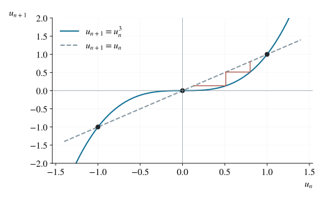

P0109 · 思维训练
三次递推中的单调性与严格界
求通项后判定四组初值下的单调方向与能否存在统一界。
1 题目
数列满足 （）。下列说法中哪项正确？
A． 时递减，且存在 使 对所有 成立。
B． 时递增，且存在 使 对所有 成立。
C． 时递减，且存在 使 对所有 成立。
D． 时递增，且存在 使 对所有 成立。

换元 后，问题由 的三个固定点控制。
2 思路与提示
先减去固定点 ，再选择缩放使递推系数消失。不要用前三项的表现代替全数列的结论。
3 解答展开 / 收起
3.1 可逆换元求通项
令 ，代入得 。由归纳法，，所以
3.2 四种初值分别判定
时 ，幂的指数始终为奇数，数列严格递减至负无穷，不存在实下界，A 错。
时 ，数列严格递增趋于 ，且每项都小于 ；取 ，B 对。
时 ，数列严格递减趋于 。若 ，充分大的 满足 ，不可能所有项都大于 ，C 错。
时 ，数列严格递增至正无穷，不存在实上界，D 错。答案为 B。
4 方法与讨论
固定点为 。在 时，迭代向中间固定点 靠近；越过两个外侧固定点后则向无穷远离。归一化把这一结构完整显示出来，比逐个算项更能解释所有初值。